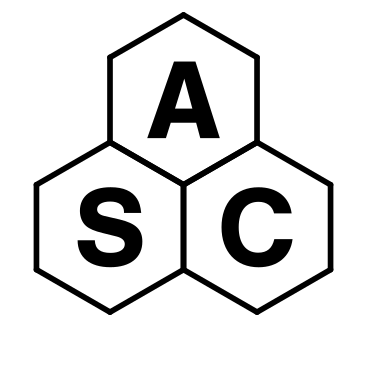

Don't waste time on solved problems
Researchers and staff, come to the daily Scientific Computing garage session
"Excuse me, I have a quick question..." can save you time and
improve your career
- What? Informally ask us about Triton
usage, remote access, Python, etc. (or even just
chat), ...
- Where? Zoom, everyday, 13:00 scicomp.aalto.fi/help/garage/
- Who? We are Triton
staff, Research Software
Engineers, Department IT, Data
Agents, workstation software maintainers,
…
